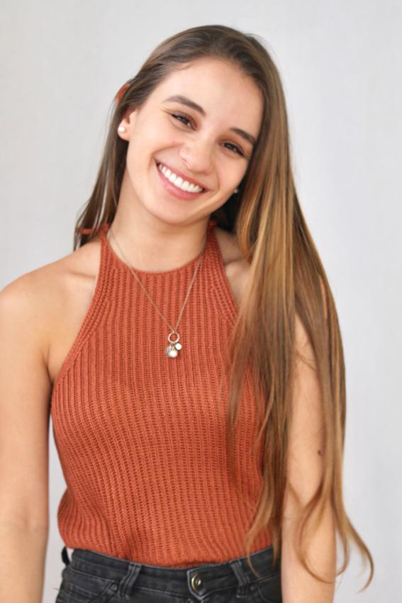

Andrea Brenes
Hello, this is my "working on it" portfolio.
ABOUT ME - Get to know me better
I'm a User Experience designer from Costa Rica and currently living in Barcelona.
I was born in San José, Costa Rica. I am an Industrial Design Engineer, graduated from the Technologic Insitute of Costa Rica. Here I studied for 5 years, where I had the opportunity to make an exchange in the “Hochschule für Gestaltung” (design school) in Germany and the bachelor project in a german company called EnergyTube, for 6 more months. Throughout my study and internship process, I’ve learned about product design, visual communication, web design, marketing, ergonomic design, interaction design; this focused mainly in the user experience. After going back to Costa Rica I worked in a publicity agency as a graphic designer for 9 months and then changed to the user experience and product design area in GoPato, a Costarican startup. Currently I’m in Barcelona doing a master in UX in Barcelona Technology School. I’d like to learn more about different areas as well as extend the knowledge in the areas I already know.
I think knowledge never stops growing.
In my free time I like to travel, read, meet new people and new places.

TESTIMONIALS
To whom it may concern,
Andrea Brenes was the first designer we hired on our design team, she helped me develop the design system we used, she had no trouble learning the different tools we were using and was able t help and support the new members, she quickly became a mentor. At GoPato we worked with a lot of prototypes for mobile and web and like any startup we did that at crazy speeds. Andrea was always able to not only deliver but exceed expectations doing so, she was able to tackle projects big and small and led the research necessary to iterate on those. Any team should be happy to add Andrea as a new member, she’s always happy, helping, going, asking questions and always evolving.
Feel free to contact me if you require more information about her.
Pura Vida
Mac Navarro
Design cofounder of Apptronomy
mac@apptronomy.com